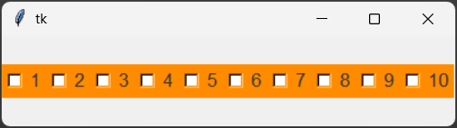
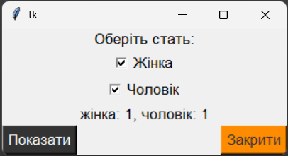
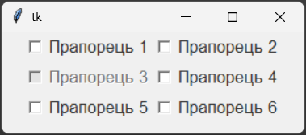
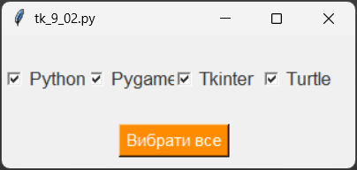

Віджет Checkbutton – клас прапорців (чекбоксів). Цей віджет GUI дозволяє користувачеві вибрати один або кілька елементів з набору. Коли користувач вибирає чекбокс, він не скидається автоматично. Чекбокси зазвичай використовуються для вибору декількох варіантів з усіх можливих. Наприклад, вибір характеристик для обраного товару, вибір товарів для порівняння, або вибір інгрідієнтів для приготування піци.
Загальний синтаксис:
name = Checkbutton(window, options)
де, name – ім'я прапорця, window – ім'я вікна, на якому розташовується прапорець, options – параметри прапорця.
Властивості Checkbutton:
| Властивість | Значення |
|---|---|
| width | Ширина прапорця в пікселях. |
| height | Висота прапорця в пікселях. |
| text | Текст, що відображається на прапорці. |
| background (bg) | Колір фону прапорця. |
| foreground (fg) | Колір тексту на прапорці. |
| borderwidth (bd) | Ширина рамки навколо прапорця в пікселях. |
| state | Стан прапорця. Може мати значення: "normal" або "disabled". |
| compound | Спосіб розміщення зображення та тексту на прапорці. Може мати значення: "left", "right", "top", "bottom", "center". |
| justify | Вирівнювання тексту на прапорці. Може мати значення: "left", "right", "center". |
| relief | Стиль рамки навколо прапорця. Може мати значення: "flat", "raised", "sunken", "groove", "ridge". |
| overrelief | Стиль рамки прапорця при наведенні на неї. Може бути: "flat", "raised", "sunken", "groove", "ridge". |
| font | Шрифт тексту на прапорці. Може бути заданий у вигляді рядка, наприклад: "Arial 12", або у вигляді кортежу, наприклад: ("Arial", 12). |
| image | Зображення, що відображається на прапорці. |
| onvalue | Значення, яке приймається змінною при виборі прапорця. |
| offvalue | Значення, яке приймається змінною при невиборі прапорця. |
| variable | Змінна, яка зберігає значення прапорця. |
Властивості Checkbutton дозволяють налаштовувати зовнішній вигляд та поведінку прапорця. Ви можете використовувати ці властивості для створення інтуїтивно зрозумілих та привабливих інтерфейсів користувача у своїх програмах на Python з використанням Tkinter.
Функції Checkbutton:
Функції Checkbutton дозволяють виконувати різні операції з прапорцями, такі як отримання значення, встановлення значення та інші.
| Функція | Значення |
|---|---|
| select( ) | Вибирає прапорець. Після виклику цієї функції прапорець стає вибраним, і змінна, пов'язана з ним через властивість variable, набуває значення, яке відповідає властивості onvalue цього прапорця. |
| deselect( ) | Скидає вибір прапорця. Після виклику цієї функції прапорець стає не вибраним, і змінна, пов'язана з ним через властивість variable, набуває значення None або іншого значення, яке відповідає не вибраному прапорцю. |
| toggle( ) | Перемикає стан прапорця. Якщо прапорець був вибраним, він стає не вибраним, і навпаки. Змінна, пов'язана з прапорцем через властивість variable, відповідно набуває значення, яке відповідає новому стану прапорця. |
Прапорці не вимагають установки між собою зв'язку, тому може виникнути питання, а чи потрібні тут змінні Tkinter? Так вони потрібні, щоб отримувати відомості про стан прапорців. За значенням пов'язаної з Checkbutton змінної можна визначити, чи обрано прапорець чи ні, що в свою чергу вплине на хід виконання програми.
У кожного прапорця повинна бути своя окрема змінна Tkinter!
За допомогою опції onvalue встановлюється значення, яке приймає пов'язана змінна при включеному прапорці. За допомогою властивості offvalue — при вимкненому.
1. Створимо програму, яка у вікні містить десять перемикачів, розміщених горизонтально.
from tkinter import *
root = Tk()
for i in range(10):
ch_button = Checkbutton(root, text=str(i+1), font="Arial 13", bg="#FF8C00")
ch_button.pack(side=LEFT)
root.mainloop()

2. Створимо програму в якій у вікні розташувати мітку, два прапорці та дві кнопки. Перша кнопка друкує значення змінних var1 та var2, які визначають стан прапорців, а друга – закриває вікно програми. Стан прапорців визначаємо так: 1 – прапорець увімкнений, 0 – прапорець вимкнений.
from tkinter import *
root = Tk()
def var_states():
lab2['text']=f"жінка: {var1.get()}, чоловік: {var2.get()}"
lab2.config(font="Arial 13")
lab1 = Label(root, width=35, text="Оберіть стать:", font="Arial 13").pack()
var1 = IntVar()
check_b1 = Checkbutton(root, text="Жінка", font="Arial 13", variable=var1, onvalue=1, offvalue=0).pack()
var2 = IntVar()
check_b2 = Checkbutton(root, text="Чоловік", font="Arial 13", variable=var2, onvalue=1, offvalue=0).pack()
lab2 = Label(root)
lab2.pack()
b1 = Button(root, text='Показати', font="Arial 13", bg="#333333", fg="white", command=var_states).pack(side=LEFT)
b2 = Button(root, text='Закрити', font="Arial 13", bg="#ff8c00", fg="#333333", command=root.destroy).pack(side=RIGHT)
root.mainloop()

1. Створіть прапорці за зразком 1: один прапорець із шести повинен бути недоступним для взаємодії. Розташуйте прапорці за допомогою пакувальника grid. Файл з кодом програми збережіть у власну папку з іменем tk_9_01.py.
Зразок 1

Підказка: Щоб прапорець став недоступним, задай властивості state значення DISABLED.
2. Створіть прапорці та кнопку "Вибрати все" за зразком. При натисканні на кнопку усі прапорці стають увімкненими. Файл з кодом програми збережіть у власну папку з іменем tk_9_02.py.
Зразок 2

Підказка: При додавання події до кнопки використовуйте функцію select().